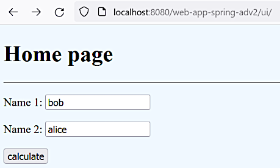
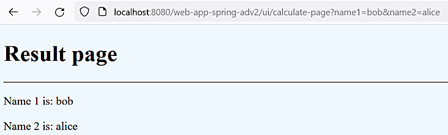
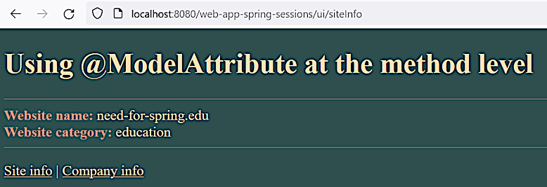

Data binding
Data binding
Data binding
Mar 23, 2023
In this section data communication will be demonstrated using:
Also different types of models will be discussed.
Project web-app-spring-adv1 was copy-pasted to web-app-spring-adv2 and cleaned up a little bit.
URL http://localhost:8080/web-app-spring-adv2/view/hello-page.jsp may be used for a check.
Git commit:
795beda0443df37aa087cd6ac24d5cb9d093b8a2project 'web-app-spring-adv2' initialized
ModelA similar thing was done here. In this section the following pages are created and tied up with the controller methods:
http://localhost:8080/web-app-spring-adv2/ui/

http://localhost:8080/web-app-spring-adv2/ui/calculate-page?name1=bob&name2=alice

In this example also the @org.springframework.web.bind.annotation.RequestParam annotation is
used. This annotation is applied to controller method parameters and maps these parameters to
the HTTP request parameters. Here the example in the file MyAppController:
. . .
@RequestMapping("/calculate-page")
public String showCalculatePage(@RequestParam("name1") String firstName,
@RequestParam String name2,
Model model) {
model.addAttribute("firstName", firstName);
model.addAttribute("secondName", name2);
return "result-page";
}
. . .Git commit:
9e58c49500e1a1fe5e13fa1e4cd4b1caa8bce005two names form created and processed
In the MyAppController
controller a new method is added:
. . .
@RequestMapping("/calculate-page-dto")
public String showCalculatePageDto(UserInfoDto dto, Model model) {
model.addAttribute("firstName", dto.getName1());
model.addAttribute("secondName", dto.getName2());
return "result-page";
}
. . .It uses the parameter dto of a newly created class UserInfoDto
that is a simple POJO with fields, setters and getters. the content of this object is filled
by the Spring MVC framework.
The new URL is http://localhost:8080/web-app-spring-adv2/ui/calculate-page-dto?name1=alice&name2=bob and the result is the same.
Git commit:
3a693e8f66a8770fc1d3c6c8782a8f39609d717aDTO used for form data binding
[2.6, 1:15:29], also probably [11] may be useful as an additional material.
Spring MVC form tag will help us for two-way data binding.
The following tags may be used:
form:formform:inputform:radiobuttonform:selectform:passwordform:textareaNeed to activate these tags by adding the following tag library declaration to the JSP file:
<%@ taglib prefix="form" uri="http://www.springframework.org/tags/form"%>Two additional controller methods were added into the MyAppController
controller:
. . .
@RequestMapping("/spring")
public String showHomePageSpring(Model model) {
UserInfoDto dto = new UserInfoDto();
model.addAttribute("userInfo", dto);
return "home-page-spring";
}
@RequestMapping("/calculate-page-springs")
public String showCalculatePageSpring(UserInfoDto dto, Model model) {
model.addAttribute("dto", dto);
return "result-page-spring";
}
. . .Two views were added as well:
home-page-spring.jsp, the fragment is:
. . .
<form:form action="calculate-page-springs" method="GET" modelAttribute="userInfo">
<p><label for="name1">Name 1: </label><form:input id="name1" path="name1"/></p>
<p><label for="name2">Name 2: </label><form:input id="name2" path="name2"/></p>
<input type="submit" value="calculate"/>
</form:form>
. . .result-page-spring.jsp, the fragment is:
. . .
<p>Name 1 is: ${dto.name1}</p>
<p>Name 2 is: ${dto.name2}</p>
. . .Git commit:
3804e740d5c5a6acf518d5a8d6aa5bce42e4f66eSpring MVC form tags introduced
Actually with this approach it's not necessary to handle a model object. The controller methods may be significantly simplified like this:
. . .
@RequestMapping("/spring")
public String showHomePageSpring(@ModelAttribute("userInfo") UserInfoDto dto) {
return "home-page-spring";
}
@RequestMapping("/calculate-page-springs")
public String showCalculatePageSpring(@ModelAttribute("dto") UserInfoDto dto) {
return "result-page-spring";
}
. . .Note
There's an additional explanations on the @ModelAttribute annotation
here.
Looks like the @ModelAttribute annotation requires the argument. There were cases
when it didn't work without arguments even if the parameter name matched the attribute name
like in the second example where the both names are dto.
Git commit:
e202af80462441a660c87a1f2e387fd27faf9c2econtroller methods simplified
Apr 5, 2023
@ModelAttribute at the method levelIn the Youtube course this material is given much later than the other material in this section.
The existing project
web-app-spring-sessions
is going to be used for the work through.
Some initial objects (a controller, a view and a model) are created:
Git commit:
7a1014dca7bc7d3e207b9e06cb1312c871de51b8initial setup for @ModelAttribute investigationGit commit:
2ac5aecf4683500b8d12dc5f34453648537496a8simple model usage demonstrated
The new MyWebsiteController
class version is:
@Controller
public class MyWebsiteController {
@ModelAttribute
private WebsiteInfoDto getWebsiteInfo() {
System.out.println("Inside getWebsiteInfo() method");
WebsiteInfoDto websiteInfo = new WebsiteInfoDto();
websiteInfo.setWebsiteName("need-for-spring.edu");
websiteInfo.setWebsiteCategory("education");
return websiteInfo;
}
@RequestMapping("/siteInfo")
public String showWebsiteInfo(Model model) {
System.out.println("Inside showWebsiteInfo() method");
WebsiteInfoDto websiteInfo = (WebsiteInfoDto) model.getAttribute("websiteInfoDto");
System.out.println("websiteInfo=" + reflectionToString(websiteInfo, JSON_STYLE));
return "info";
}
@RequestMapping("/companyInfo")
public String showCompanyInfo() {
System.out.println("Inside showCompanyInfo() method");
return "info";
}
}The getWebsiteInfo() method annotated with the @ModelAttribute is called before calling every
controller handler method:
Inside getWebsiteInfo() method
Inside WebsiteInfoDto constructor
Inside showWebsiteInfo() method
websiteInfo={"websiteCategory":"education","websiteName":"need-for-spring.edu"}The web page looks like this:

The both pages shows the same dynamic field values.
Git commit:
2d2229ba9c65e81593b86eb716585bc48f6e8386@ModelAttribute at method level implemented
If in the showCompanyInfo() handler method we declare the model attribute like this:
@RequestMapping("/companyInfo")
public String showCompanyInfo(@ModelAttribute("websiteInfo") WebsiteInfoDto websiteInfo) {
System.out.println("Inside showCompanyInfo() method");
System.out.println("websiteInfo=" + reflectionToString(websiteInfo, JSON_STYLE));
return "info";
}we will find out that a new model is not created if it's already created by the @ModelAttribute
annotated method.
Git commit:
363efc7f53dbb4306b6e44a44cf9f695eda394db@ModelAttribute annotation used
@ControllerAdvice annotationThis annotation is used in the following subsection and in the other parts of this course nones.
The official documentation may be found in [18, 1.3.7. Controller Advice]:
Typically
@ExceptionHandler,@InitBinder, and@ModelAttributemethods apply within the@Controllerclass (or class hierarchy) in which they are declared. If you want such methods to apply more globally (across controllers), you can declare them in a class annotated with@ControllerAdviceor@RestControllerAdvice.
It's also explained in some more details at [2.17, 1:17:50].
If we add another controller MyTestController:
@Controller
public class MyTestController {
@RequestMapping("/test")
public String showTestInfo(@ModelAttribute("websiteInfo") WebsiteInfoDto websiteInfo) {
System.out.println("Inside showTestInfo() method");
System.out.println("websiteInfo=" + reflectionToString(websiteInfo, JSON_STYLE));
return "info";
}
}then of cause the websiteInfo model attribute will be created anew and the view fields will be
empty.
The @org.springframework.web.bind.annotation.ControllerAdvice annotation on the first controller
MyWebsiteController
will make this controller getWebsiteInfo() method execute on the other controllers:
@Controller
@ControllerAdvice(assignableTypes = MyTestController.class)
public class MyWebsiteController {
. . .The assignableTypes parameter allows to restrict the controller classes that are affected by this
annotation. If no arguments are specified then all controllers will be affected. There's also
the self explanatory basePackages parameter.
Git commit:
36e2031fb6a999c3ae3e44b987842ac446e1e4e9@ControllerAdvice annotation used
@SessionAttributes annotationWhen we use the
@SessionAttributes annotation
on the controller the @ModelAttribute annotated method is invoked only if the
conversational scope does not contain the specified attributes:
@Controller
@ControllerAdvice(assignableTypes = MyTestController.class)
@SessionAttributes("websiteInfo")
public class MyWebsiteController {
. . .As we add the @SessionAttributes annotation the model attribute ones created is persisted in the
session and is not created anymore. See the bellow commit for more details.
Git commit:
492be58a46a2f62eaa5e255dcf99abbe69e6089b@ModelAttribute conbined with @SessionAttributes